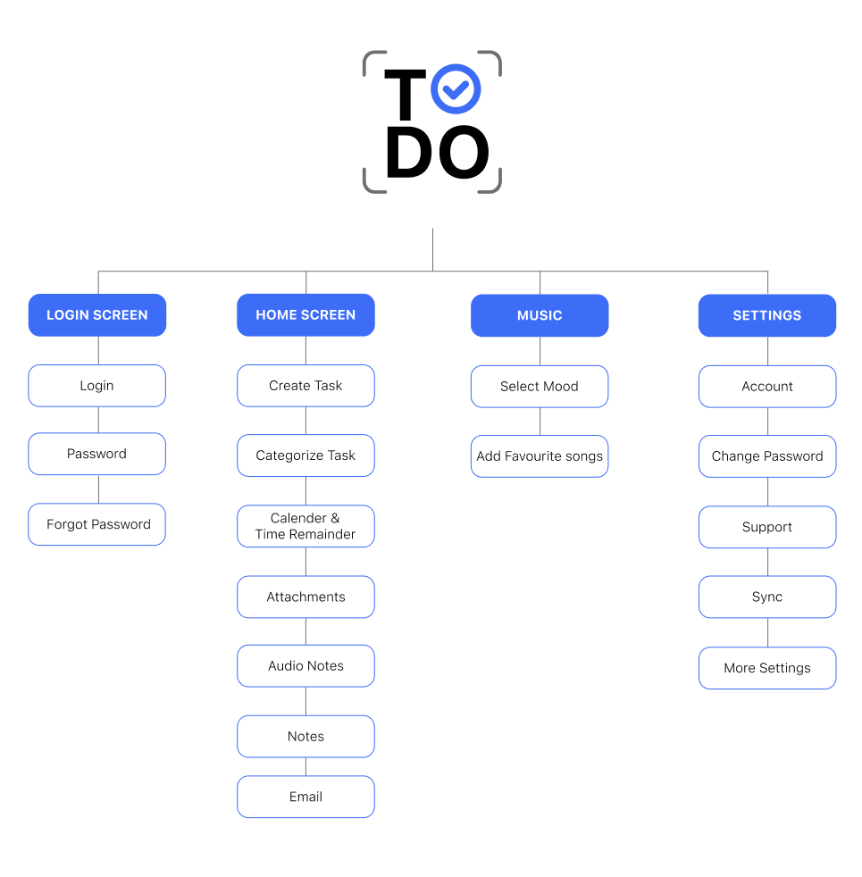
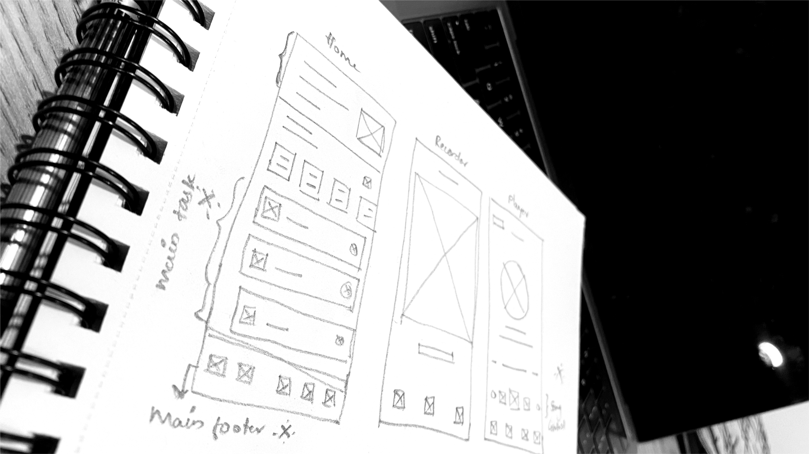
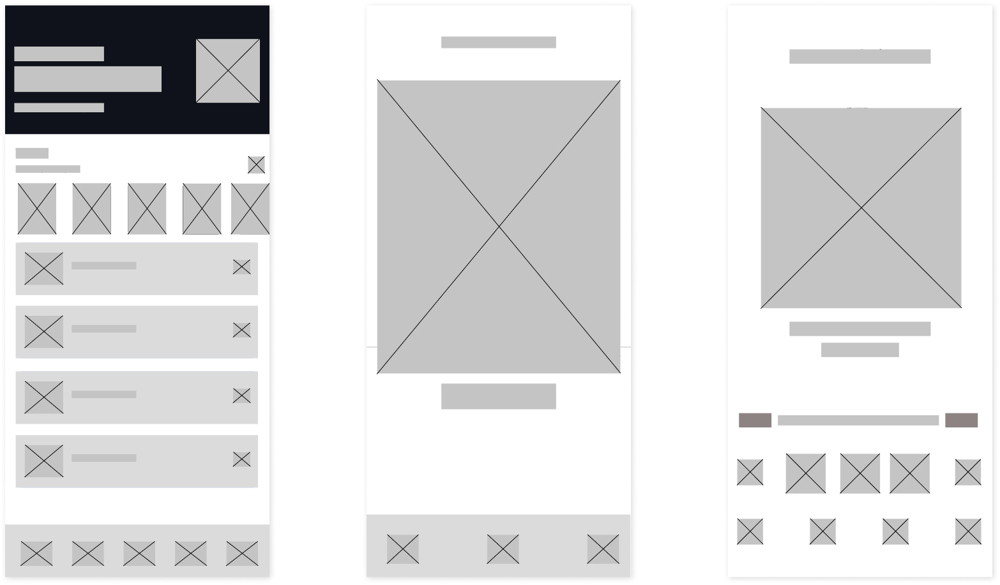
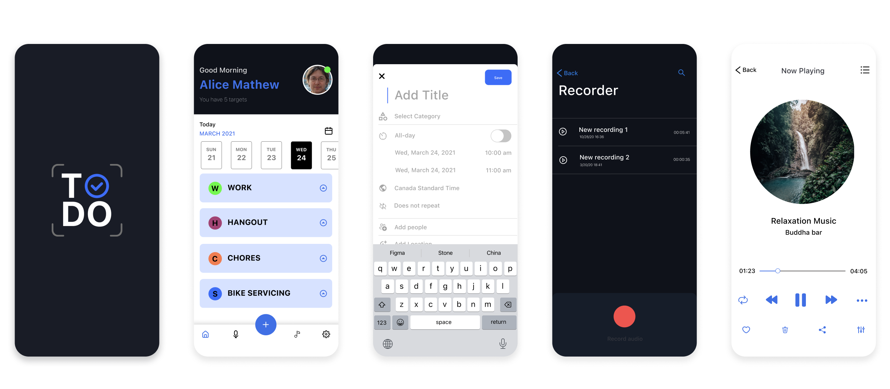

TODO APP
Most of us have experienced the real struggle of organizing, planning, and remembering day-to-day things in our busy lives. While there is no shortage of task management apps on the market, I noticed that most existing designs function merely as digital checklists—they do not address the root behavioral problems behind task management.
By conducting in-depth user research, I identified the core frustrations preventing users from staying organized and set out to design a solution tailored to how people actually plan, conceptualize, and manage their time effortlessly.
Current solutions force users to fragment their workflows across multiple apps. Users are struggling with:
- Scattered Workflows: Missing meeting minutes and struggling to manage quick audio notes.
- Lack of Prioritization: Overwhelming lists that fail to distinguish between urgent tasks and long-term goals.
- Constant Distractions: Irregularities in focus caused by poorly structured notifications and cluttered interfaces.
People need a single, unified stop for all their tasks—a workspace that inherently understands the difference between a passing thought and a critical deadline.
I designed a holistic To-Do mobile application to directly address these pain points. The app provides a single space that justifies the work hours required for planning, scheduling, executing, and reporting, while strictly safeguarding personal time.
By integrating features like audio note management, seamless meeting minute capture, and automated prioritization matrices, the app acts as a proactive digital assistant rather than a passive list.


The structural foundation of the app was built through rapid iterations. Low-Fidelity wireframes were sketched to explore initial screen layouts and establish a clear visual hierarchy for prioritization.
Once the core layout was validated, I transitioned into Mid-Fidelity wireframes. This stage focused on testing interactive elements, defining button placements for one-handed mobile use, and ensuring the transition between text input and audio note recording felt frictionless.


The final visual design was engineered to eliminate cognitive overload. I utilized a clean, modern aesthetic with intentional whitespace to draw focus entirely to the tasks at hand. Color coding was introduced subtly to differentiate between work and personal tasks, ensuring users could digest their daily schedule at a single glance without feeling overwhelmed.
